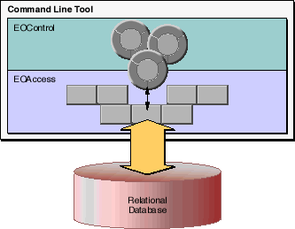
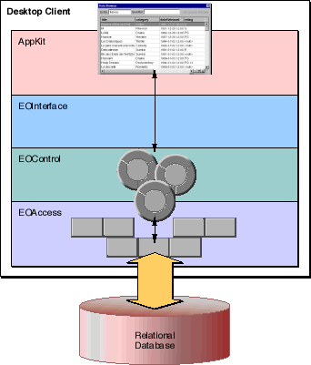
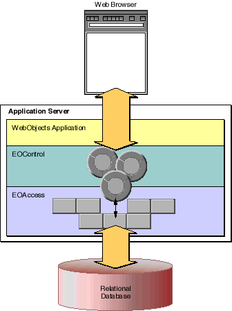
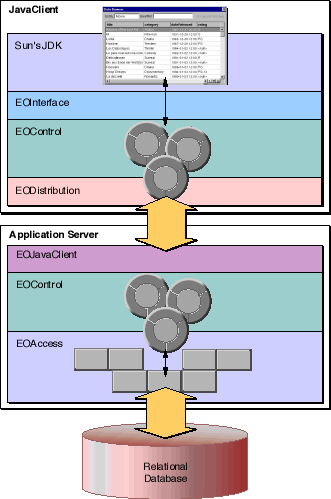

Table of Contents
Table of Contents  Next Section
Table of Contents
Next Section
Table of Contents  Previous Section
Previous Section
This section introduces the Framework layers by demonstrating the roles they play in the four most basic types of Enterprise Objects Framework applications.

Figure 7. A Command-Line Program
An Application Kit Client/Server Application
The second type of application is a traditional client/server application in which desktop clients access a database running on a server. To the simple architecture of a command-line program, a desktop client adds a graphical user interface and two additional frameworks to support that interface (Figure 8).

Figure 8. An Application Kit Client/Server Application
user-interface controls (buttons, text fields, and tables, for example) for applications with graphical user interfaces. The Application Kit isn't a part of Enterprise Objects Framework; rather it's a fundamental component of the Yellow Box development environment. For more information on the Application Kit, see the "Introduction to the Application Kit" in the Application Kit Reference. An HTML WebObjects Application
The third type of application is an HTML web application. Like the Application Kit client/server application, the HTML web application uses the access and control layers to fetch and manage enterprise objects. However, the HTML web application replaces the Application Kit-based user interface with a standard, HTML web page (Figure 9).

Figure 9. An HTML WebObjects Application

Figure 10. A Web Application with a Java Client
user-interface elements. It also provides its own mechanism for transporting data between the control layer's graph of enterprise objects and a web page. WebObjects framework, like the Application Kit, is not a part of Enterprise Objects Framework. Rather, it's the fundamental component of the WebObjects product. For more information on the WebObjects framework, see the WebObjects Developer's Guide.
Table of Contents Next Section